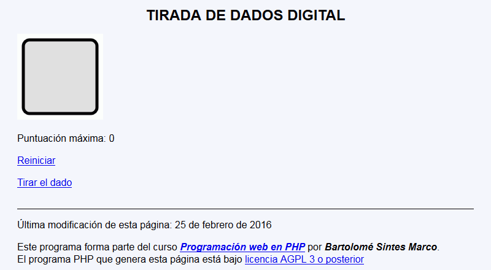
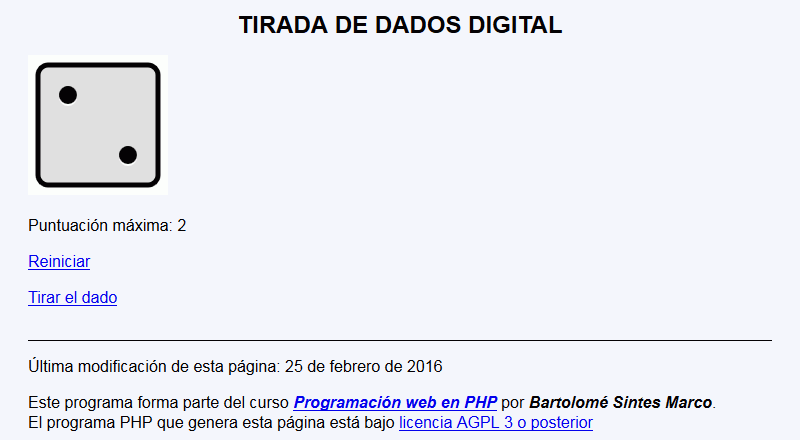
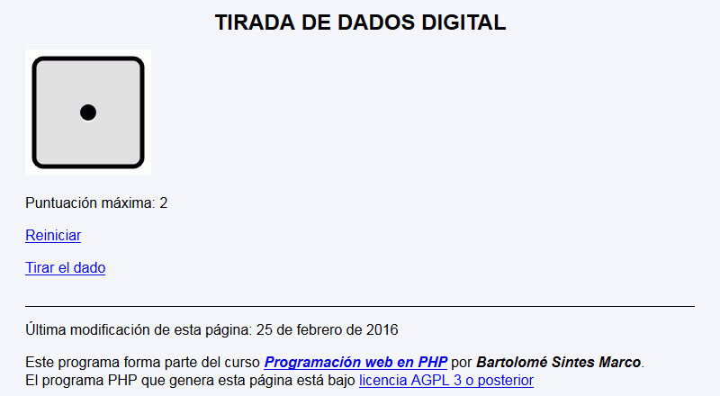

En este ejercicio se debe crear un programa que muestra la tirada de un dado al azar y la mayor puntación alcanzada.
 La puntuación máxima se almacenará en una variable de sesión, no en un control oculto.
La puntuación máxima se almacenará en una variable de sesión, no en un control oculto.



<h1>Tirada de dados digital</h1>
<p><img src="1.svg" alt="1" width="140" height="140" /></p>
<p>Puntuación máxima: 3</p>
<p><a href="tirada-dado.php?accion=reiniciar">Reiniciar</a></p>
<p><a href="tirada-dado.php?accion=tirar">Tirar el dado</a></p>
Nota: El día del examen los alumnos no tienen acceso a este ejemplo, solamente tienen acceso a las capturas del apartado anterior.
Un ejemplo de programa puede probarse en la ventana siguiente: